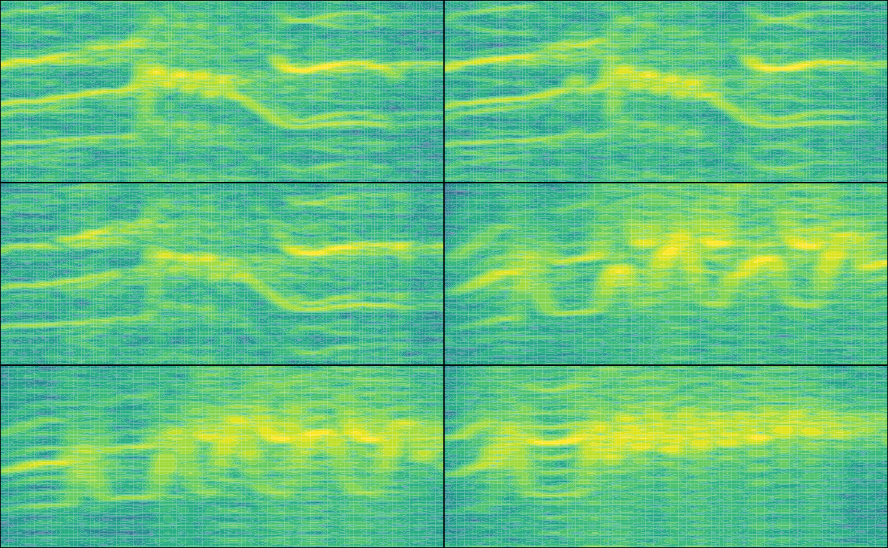

warbleR: Annotation data format
Marcelo Araya-Salas, PhD
2024-02-28
Source:vignettes/annotation_data_format.Rmd
annotation_data_format.Rmd
This vignette explains in detail the structure of the R data objects contain sound file annotation data that are required by the package warbleR.

An annotation table (or selection table in Raven’s and warbleR’s terminology) is a data set that contains information about the location in time (and sometimes in frequency) of the sounds of interest in one or more sound files. warbleR can take sound file annotations represented in the following R objects:
- Data frames
- Selection tables
- Extended selection tables
The last 2 are annotation specific R classes included in warbleR. Here we described the basic structure of these objects and how they can be created.
Data frames
Data frames with sound file annotations must contain the following columns:
- ‘sound.files’: character or factor column name of the sound files including the file extension (e.g. “rec_1.wav”)
- ‘selec’: numeric, character or factor column with a unique identifier (at least within each sound file) for each annotation (e.g. 1, 2, 3 or “a”, “b”, “c”)
- ‘start’: the start position in time of an annotated sound (in seconds)
- ‘end’: the end position in time of an annotated sound (in seconds)
| sound.files | selec | start | end |
|---|---|---|---|
| sound_file_1.wav | 1 | 3.02 | 5.58 |
| sound_file_1.wav | 2 | 7.92 | 9.00 |
| sound_file_2.wav | 1 | 4.21 | 5.34 |
| sound_file_2.wav | 2 | 8.85 | 11.57 |
Data frames containing annotations can also include the following optional columns:
- ‘bottom.freq’: numeric column with the bottom frequency of the frequency range of the annotation (in kHz)
- ‘top.freq’: numeric column with the top frequency of the frequency range of the annotation (in kHz)
- ‘channel’: numeric column with the number of the channel in which the annotation is found in a multi-channel sound file (by default is 1)
| sound.files | selec | start | end | bottom.freq | top.freq | channel |
|---|---|---|---|---|---|---|
| sound_file_1.wav | 1 | 3.02 | 5.58 | 5.46 | 10.22 | 1 |
| sound_file_1.wav | 2 | 7.92 | 9.00 | 3.73 | 9.36 | 1 |
| sound_file_2.wav | 1 | 4.21 | 5.34 | 4.31 | 9.40 | 1 |
| sound_file_2.wav | 2 | 8.85 | 11.57 | 4.55 | 9.11 | 1 |
The sample data “lbh_selec_table” contains a data frame with annotations with the format expected by warbleR:
| sound.files | channel | selec | start | end | bottom.freq | top.freq |
|---|---|---|---|---|---|---|
| Phae.long1.wav | 1 | 1 | 1.169 | 1.342 | 2.22 | 8.60 |
| Phae.long1.wav | 1 | 2 | 2.158 | 2.321 | 2.17 | 8.81 |
| Phae.long1.wav | 1 | 3 | 0.343 | 0.518 | 2.22 | 8.76 |
| Phae.long2.wav | 1 | 1 | 0.160 | 0.292 | 2.32 | 8.82 |
| Phae.long2.wav | 1 | 2 | 1.457 | 1.583 | 2.28 | 8.89 |
| Phae.long3.wav | 1 | 1 | 0.627 | 0.758 | 3.01 | 8.82 |
| Phae.long3.wav | 1 | 2 | 1.974 | 2.104 | 2.78 | 8.89 |
| Phae.long3.wav | 1 | 3 | 0.123 | 0.255 | 2.32 | 9.31 |
| Phae.long4.wav | 1 | 1 | 1.517 | 1.662 | 2.51 | 9.22 |
| Phae.long4.wav | 1 | 2 | 2.933 | 3.077 | 2.58 | 10.23 |
| Phae.long4.wav | 1 | 3 | 0.145 | 0.290 | 2.58 | 9.74 |
Typically, annotations are created in other sound analysis programs
(mainly, Raven, Avisoft, Syrinx and Audacity) and then imported into
R. We recommend annotating sound files in Raven
sound analysis software (Cornell Lab of Ornithology) and
then importing them into R with the package Rraven.
This package facilitates data exchange between R and Raven
sound analysis software and allow users to import annotation data
into R using the warbleR annotation format (see
argument ‘warbler.format’ in the function imp_raven()).
Data frames containing annotations always refer to sound files. Therefore, when using data frames users must always indicate the location of the sound files to every warbleR function when providing annotations in this format.
warbleR annotation formats
Selection tables
These objects are created with the selection_table()
function. The function takes data frames containing annotation data as
in the format described above. Therefore the same mandatory and optional
columns are used by selection tables. The function verifies if the
information is consistent (see the function check_sels()
for details) and saves the ‘diagnostic’ metadata as an attribute in the
output object. Selection tables are basically data frames in which the
information contained has been double checked to ensure it can be read
by other warbleR functions.
Selection tables are created by the function
selection_table():
# write example sound files in temporary directory
writeWave(Phae.long1, file.path(tempdir(), "Phae.long1.wav"))
writeWave(Phae.long2, file.path(tempdir(), "Phae.long2.wav"))
writeWave(Phae.long3, file.path(tempdir(), "Phae.long3.wav"))
writeWave(Phae.long4, file.path(tempdir(), "Phae.long4.wav"))
st <-
selection_table(X = lbh_selec_table, path = tempdir())
knitr::kable(st)| sound.files | channel | selec | start | end | bottom.freq | top.freq |
|---|---|---|---|---|---|---|
| Phae.long1.wav | 1 | 1 | 1.169 | 1.342 | 2.22 | 8.60 |
| Phae.long1.wav | 1 | 2 | 2.158 | 2.321 | 2.17 | 8.81 |
| Phae.long1.wav | 1 | 3 | 0.343 | 0.518 | 2.22 | 8.76 |
| Phae.long2.wav | 1 | 1 | 0.160 | 0.292 | 2.32 | 8.82 |
| Phae.long2.wav | 1 | 2 | 1.457 | 1.583 | 2.28 | 8.89 |
| Phae.long3.wav | 1 | 1 | 0.627 | 0.758 | 3.01 | 8.82 |
| Phae.long3.wav | 1 | 2 | 1.974 | 2.104 | 2.78 | 8.89 |
| Phae.long3.wav | 1 | 3 | 0.123 | 0.255 | 2.32 | 9.31 |
| Phae.long4.wav | 1 | 1 | 1.517 | 1.662 | 2.51 | 9.22 |
| Phae.long4.wav | 1 | 2 | 2.933 | 3.077 | 2.58 | 10.23 |
| Phae.long4.wav | 1 | 3 | 0.145 | 0.290 | 2.58 | 9.74 |
Selection table is an especific object class that have their own printing method:
class(st)[1] "selection_table" "data.frame"
st
[30mObject of class
[1m'selection_table'
[22m
[39m
[90m* The output of the following call:
[39m
[90m
[3mselection_table(X = lbh_selec_table, path = tempdir(), pb = FALSE)
[23m
[39m
[90m
[1m
Contains:
[22m * A selection table data frame with 11 rows and 7 columns:
[39m
[90m|sound.files | channel| selec| start| end| bottom.freq|
[39m
[90m|:--------------|-------:|-----:|-----:|-----:|-----------:|
[39m
[90m|Phae.long1.wav | 1| 1| 1.169| 1.342| 2.22|
[39m
[90m|Phae.long1.wav | 1| 2| 2.158| 2.321| 2.17|
[39m
[90m|Phae.long1.wav | 1| 3| 0.343| 0.518| 2.22|
[39m
[90m|Phae.long2.wav | 1| 1| 0.160| 0.292| 2.32|
[39m
[90m|Phae.long2.wav | 1| 2| 1.457| 1.583| 2.28|
[39m
[90m|Phae.long3.wav | 1| 1| 0.627| 0.758| 3.01|
[39m
[90m... 1 more column(s) (top.freq)
[39m
[90m and 5 more row(s)
[39m
[90m
* A data frame (check.results) with 11 rows generated by check_sels() (as attribute)
[39m
[90mcreated by warbleR 1.1.30
[39m
Note that the path to the sound files must be provided. This is necessary in order to verify that the data provided conforms to the characteristics of the audio files.
Selection table also refer to sound files. Therefore, users must always indicate the location of the sound files to every warbleR function when providing annotations in this format
Extended selection tables
Extended selection tables are annotations that include both the acoustic and annotation data. This an specific object class, extended_selection_table, that include a list of ‘wave’ objects corresponding to each of the selections in the data. Therefore, the function transforms the selection table into self-contained objects since the original sound files are no longer needed to perform most of the acoustic analysis in warbleR. This can facilitate the storage and exchange of (bio)acoustic data. This format can also speed up analyses, since it is not necessary to read the sound files every time the data is analyzed.
The selection_table() function also creates extended
selection tables. To do this, users must set the argument
extended = TRUE (otherwise, the class would be a selection
table). The following code converts the exaample ‘lbh_selec_table’ data
into an extended selection table:
ext_st <- selection_table(X = lbh_selec_table, pb = FALSE,
extended = TRUE, path = tempdir())Extended selection table is an especific object class that have their own printing method:
class(ext_st)[1] "extended_selection_table" "data.frame"
ext_st
[30mObject of class
[1m'extended_selection_table'
[22m
[39m
[90m* The output of the following call:
[39m
[90m
[3mselection_table(X = lbh_selec_table, path = tempdir(), extended = TRUE, pb = FALSE)
[23m
[39m
[90m
[1m
Contains:
[22m
* A selection table data frame with 11 row(s) and 7 columns:
[39m
[90m|sound.files | channel| selec| start| end| bottom.freq|
[39m
[90m|:----------------|-------:|-----:|-----:|-----:|-----------:|
[39m
[90m|Phae.long1.wav_1 | 1| 1| 0.1| 0.273| 2.22|
[39m
[90m|Phae.long1.wav_2 | 1| 1| 0.1| 0.263| 2.17|
[39m
[90m|Phae.long1.wav_3 | 1| 1| 0.1| 0.275| 2.22|
[39m
[90m|Phae.long2.wav_1 | 1| 1| 0.1| 0.233| 2.32|
[39m
[90m|Phae.long2.wav_2 | 1| 1| 0.1| 0.226| 2.28|
[39m
[90m|Phae.long3.wav_1 | 1| 1| 0.1| 0.231| 3.01|
[39m
[90m... 1 more column(s) (top.freq)
[39m
[90m and 5 more row(s)
[39m
[90m
* 11 wave object(s) (as attributes):
[39m
[90mPhae.long1.wav_1, Phae.long1.wav_2, Phae.long1.wav_3, Phae.long2.wav_1, Phae.long2.wav_2, Phae.long3.wav_1
[39m
[90m... and 5 more
[39m
[90m
* A data frame (check.results) with 11 rows generated by check_sels() (as attribute)
[39m
[90m
The selection table was created
[3m
[1m by element
[22m
[23m(see 'class_extended_selection_table')
[39m
[90m* 1 sampling rate(s) (in kHz):
[1m22.5
[22m
[39m
[90m* 1 bit depth(s):
[1m16
[22m
[39m
[90m* Created by warbleR 1.1.30
[39mThe wave objects contained in the extended_selection_table can be easily extracted using the warbleR function read_sound_file:
w1 <- read_sound_file(ext_st, index = 1)
w1
Wave Object
Number of Samples: 3893
Duration (seconds): 0.17
Samplingrate (Hertz): 22500
Channels (Mono/Stereo): Mono
PCM (integer format): TRUE
Bit (8/16/24/32/64): 16 The index argument indicates the row of the selection that will be read.
This data is ready to be used. For instance, here I create a multipanel graph with the spectrograms of the first 6 selections:
par(mfrow = c(3, 2), mar = rep(0, 4))
for(i in 1:6){
wv <- read_sound_file(X = ext_st, index = i)
seewave::spectro(wv, wl = 250, grid = FALSE, scale = FALSE, axisX = FALSE,
axisY = FALSE, ovlp = 90, flim = c(0, 11),
palette = viridis::viridis,
collevels = seq(-110, 0, 5))
}
References
- Araya-Salas (2017), Rraven: connecting R and Raven bioacoustic software. R package version 1.0.2.
Session information
R version 4.3.2 (2023-10-31)
Platform: x86_64-pc-linux-gnu (64-bit)
Running under: Ubuntu 22.04.4 LTS
Matrix products: default
BLAS: /usr/lib/x86_64-linux-gnu/openblas-pthread/libblas.so.3
LAPACK: /usr/lib/x86_64-linux-gnu/openblas-pthread/libopenblasp-r0.3.20.so; LAPACK version 3.10.0
locale:
[1] LC_CTYPE=C.UTF-8 LC_NUMERIC=C LC_TIME=C.UTF-8 LC_COLLATE=C.UTF-8
[5] LC_MONETARY=C.UTF-8 LC_MESSAGES=C.UTF-8 LC_PAPER=C.UTF-8 LC_NAME=C
[9] LC_ADDRESS=C LC_TELEPHONE=C LC_MEASUREMENT=C.UTF-8 LC_IDENTIFICATION=C
time zone: UTC
tzcode source: system (glibc)
attached base packages:
[1] stats graphics grDevices utils datasets methods base
other attached packages:
[1] kableExtra_1.4.0 warbleR_1.1.30 NatureSounds_1.0.4 knitr_1.45 seewave_2.2.3
[6] tuneR_1.4.6
loaded via a namespace (and not attached):
[1] gtable_0.3.4 rjson_0.2.21 xfun_0.42 bslib_0.6.1 ggplot2_3.5.0
[6] vctrs_0.6.5 tools_4.3.2 bitops_1.0-7 parallel_4.3.2 tibble_3.2.1
[11] proxy_0.4-27 fansi_1.0.6 highr_0.10 pkgconfig_2.0.3 desc_1.4.3
[16] lifecycle_1.0.4 compiler_4.3.2 stringr_1.5.1 textshaping_0.3.7 brio_1.1.4
[21] munsell_0.5.0 htmltools_0.5.7 sass_0.4.8 RCurl_1.98-1.14 yaml_2.3.8
[26] pkgdown_2.0.7 pillar_1.9.0 jquerylib_0.1.4 MASS_7.3-60 cachem_1.0.8
[31] viridis_0.6.5 digest_0.6.34 stringi_1.8.3 purrr_1.0.2 fastmap_1.1.1
[36] grid_4.3.2 colorspace_2.1-0 cli_3.6.2 magrittr_2.0.3 utf8_1.2.4
[41] scales_1.3.0 rmarkdown_2.25 signal_1.8-0 gridExtra_2.3 ragg_1.2.7
[46] memoise_2.0.1 pbapply_1.7-2 evaluate_0.23 dtw_1.23-1 fftw_1.0-8
[51] testthat_3.2.1 viridisLite_0.4.2 rlang_1.1.3 Rcpp_1.0.12 glue_1.7.0
[56] xml2_1.3.6 svglite_2.1.3 rstudioapi_0.15.0 jsonlite_1.8.8 R6_2.5.1
[61] systemfonts_1.0.5 fs_1.6.3